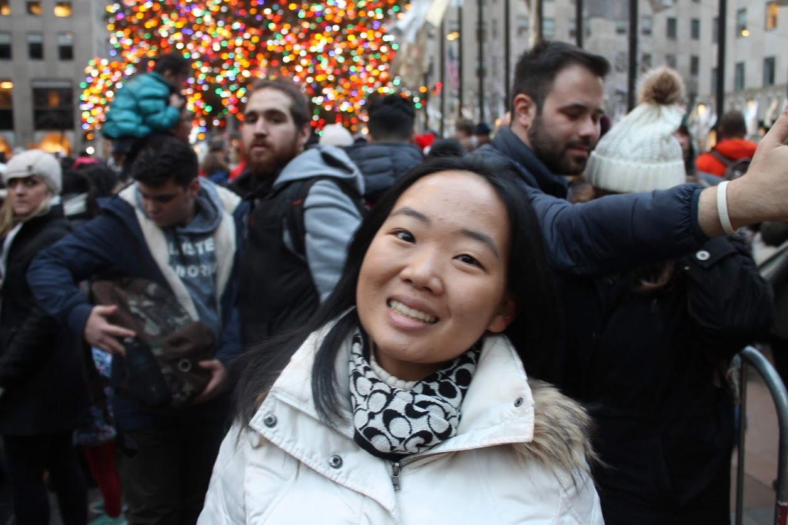
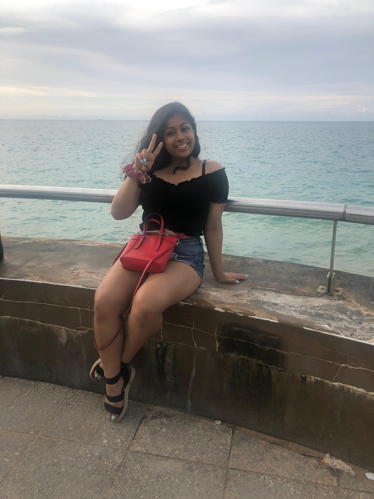
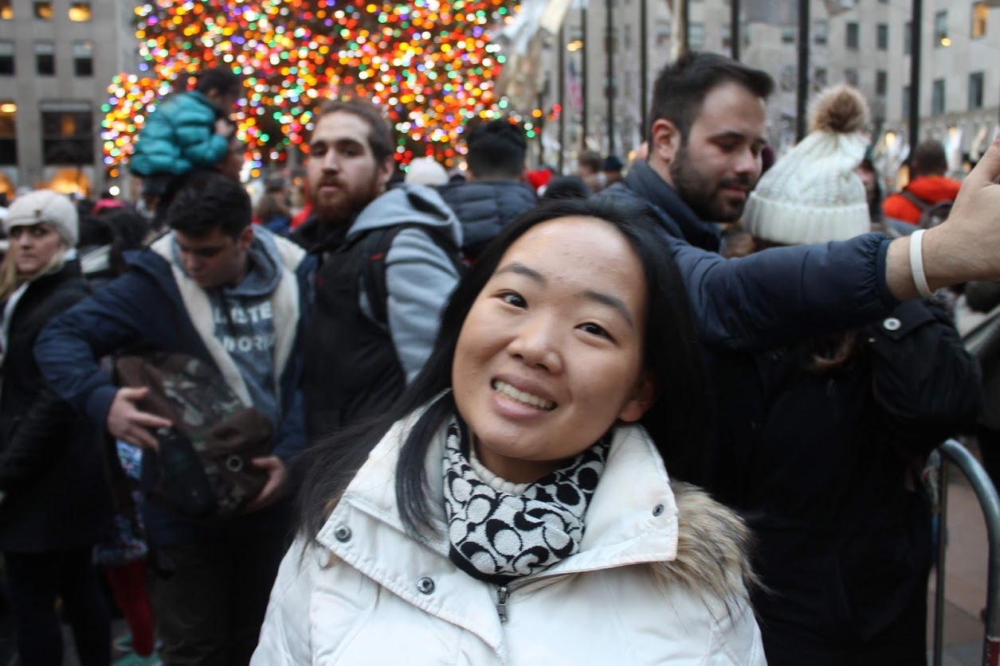
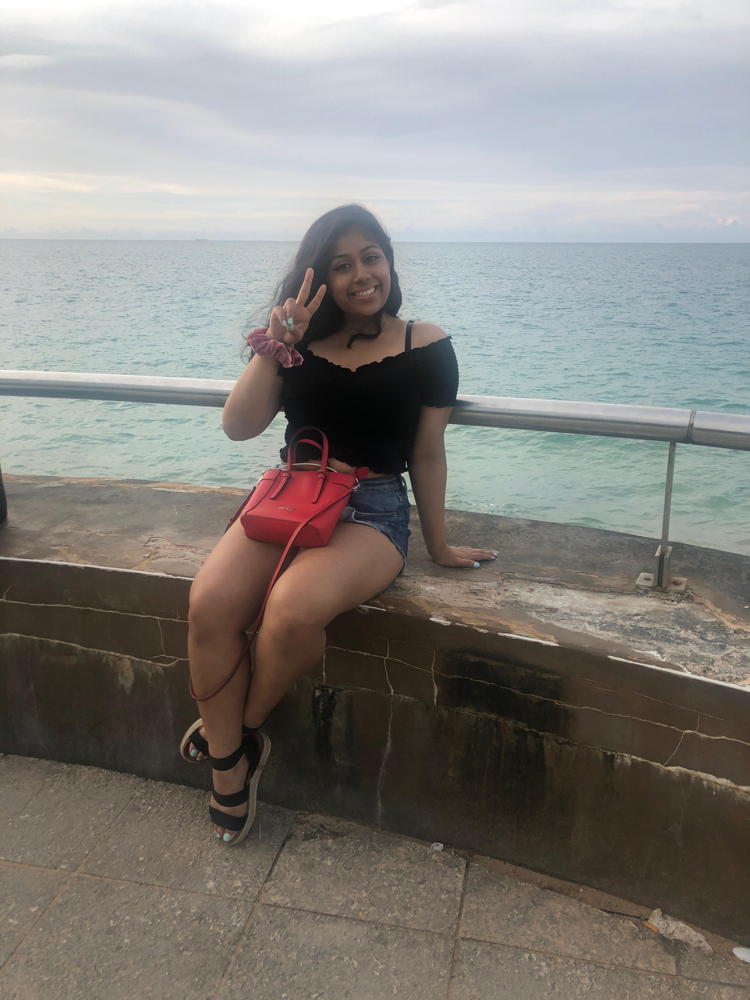

Our Mission
As coders, we created a website only about gun violence in America to spread awareness in hopes that we can help suppress this prevalent issue that is taking innocent lives across the country. Although the subject of guns and weapons may be a political subject, we are approaching gun violence on a stance to save lives and not in support of any political party. Through hard facts and statistics, hopefully we can change this country by stopping these tragic events from happening again. Thank you for visiting our website, and to support our cause, please share our webpage!
Meet the Coders

I am Ashley and I am a senior at John P Stevens High School. My favorite subject to learn in school is history, and I love to watch movies in my free time.

Hi! My name is Zubeda. I am a senior at Bard Queens. My first time participating in any form of political activism was the “Gun Violence Walkout and Die-in” at my school in 2017.
My name is Alayia. I am a junior at Riverside High School. One thing I would like to study in the near future is Psychology. I think if we understand more person on a personal level, then maybe we could understand why they do the things they do.
I am Serena -- a rising junior at Del Norte High School. I enjoy studying math, english, and history.
Meet the Coders
I am Ashley and I am a senior at John P Stevens High School. My favorite subject to learn in school is history, and I love to watch movies in my free time.

Hi! My name is Zubeda. I am a senior at Bard Queens. My first time participating in any form of political activism was the “Gun Violence Walkout and Die-in” at my school in 2017.
My name is Alayia. I am a junior at Riverside High School. One thing I would like to study in the near future is Psychology. I think if we understand more person on a personal level, then maybe we could understand why they do the things they do.
I am Serena -- a rising junior at Del Norte High School. I enjoy studying math, english, and history.